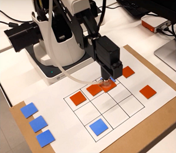
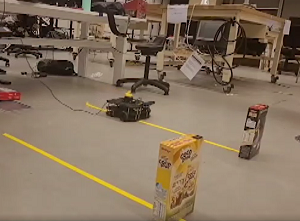
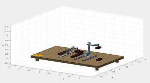
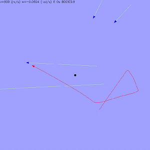

I worked as part of a team to program a robot arm to play Tic Tac Toe.
On track to graduate in 2022, I am committed to learning and have a High Distinction average. My primary interest is in robotics, and I am currently working on the control system for an exoskeleton arm in my university capstone project.
In my degree, I have worked on projects involving robotics, programming, mechanical design, and CAD.





To contact me, please email me at lukebeyles@gmail.com, or connect with me on LinkedIn at linkedin.com/in/luke-eyles.